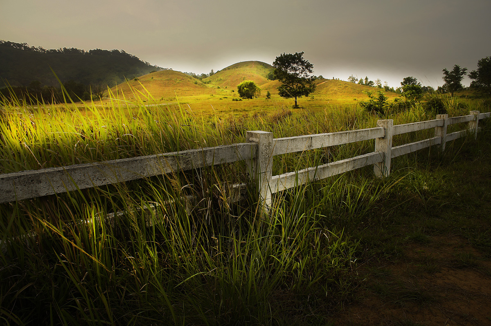
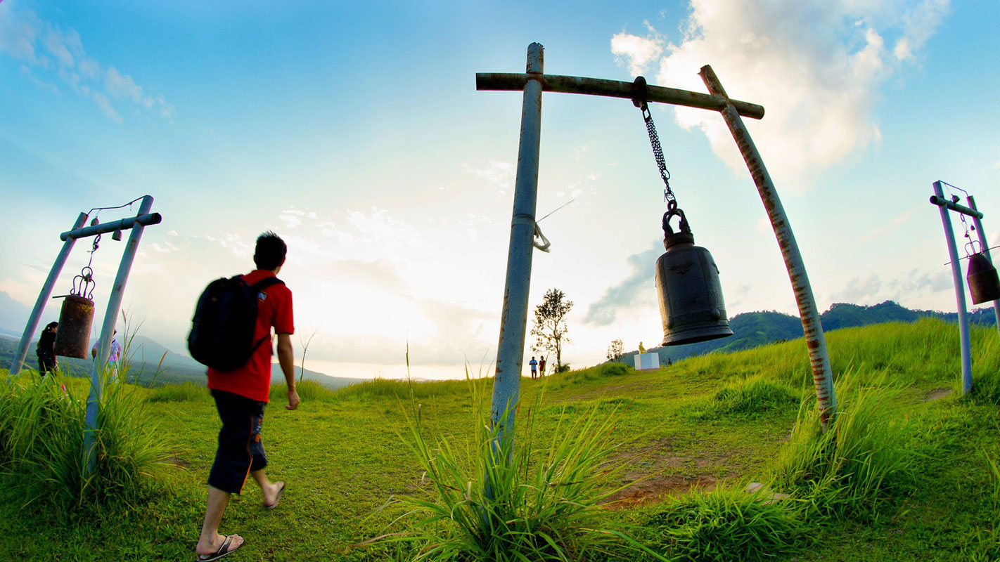
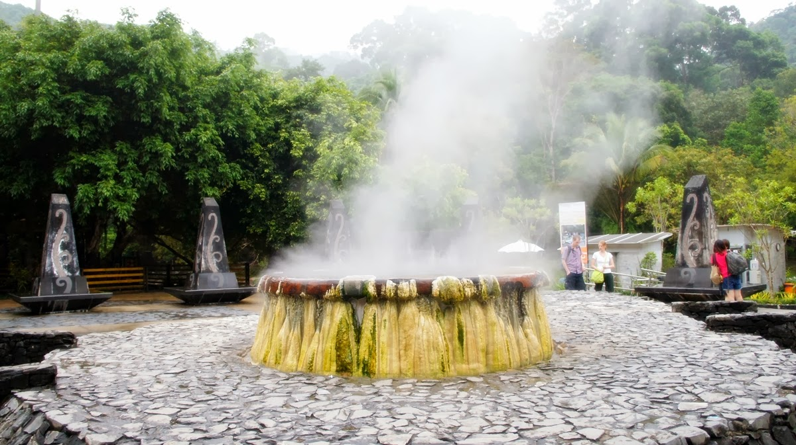

จังหวัดระนอง
คำขวัญประจำจังหวัด
คอคอดกระ ภูเขาหญ้า กาหยูหวาน ธารน้ำแร่ มุกแท้เมืองระนอง
ระนอง เป็นจังหวัดชายฝั่งทะเลตะวันตกของภาคใต้ มีพื้นที่ประมาณ 2,141,250 ไร่ มีพื้นที่ติดต่อทางตะวันออกติดต่อกับจังหวัดชุมพร
ทางใต้ติดกับจังหวัดสุราษฎร์ธานีและจังหวัดพังงา ทางตะวันตกติดกับประเทศพม่าและทะเลอันดามัน มีลักษณะพื้นที่เรียวและแคบ มีความยาวถึง
169 กิโลเมตร และมีความแคบในบริเวณอำเภอกระบุรี เพียง 9 กิโลเมตร ระนองเป็นอีกจังหวัดหนึ่งที่มีประวัติความเป็นมายาวนานนับตั้งแต่ครั้งกรุงศรีอยุธยาเรืองอำนาจ
เดิมเป็นหัวเมืองขนาดเล็กขึ้นกับเมืองชุมพร คำว่าระนองเพี้ยนมาจากคำว่า แร่นอง เนื่องจากในพื้นที่จังหวัดมีแร่อยู่มากมาย
ภูเขาหญ้า

ภูเขาหญ้า จังหวัดระนอง ภูเขาหญ้าหรือที่ชาวระนองเรียกว่า “เขาหัวโล้น” หรือ เขาผี อยู่ห่างจากตัวเมืองระนองแค่เพียง 13 กิโลเมตร เท่านั้น ขับรถก่อนถึง สามารถมองเห็นได้ชัดเจนริมถนนสายระนอง – พังงา ลักษณะเป็นภูเขาโล้น โล้นเตียนไม่มีต้นไม้ใหญ่ขึ้น มีเพียงหญ้าปกคลุมเท่านั้น ในฤดูฝนจะเป็นสีเขียวขจี ส่วนฤดูร้อนภูเขาหญ้าจะเปลี่ยนสีสันกลายเป็นสี้น้ำตาล นับเป็นสถานที่เที่ยวใกล้เมืองระนองที่มากมายความมหัศจรรย์และสามารถท่องเที่ยวได้ตลอดทั้งปี
ระนองแม้ว่าจะขึ้นชื่อว่ามีภูเขามาก กระทั่งในเมืองก็หาที่ราบเรียบได้น้อย แต่ไม่มีภูเขาลูกไหนโดดเด่นและสะดุดตาเทียบเท่าที่นี่ แค่เพียงขับรถออกนอกเมืองไปเพียง 13 กิโลเมตร จะมองเห็นน้ำตกหงาว สายน้ำสีขาวไหลผ่านเทือกเขายาวสวยงาม ฝั่งตรงข้ามถนนเป็นภูเขาขนาดย่อมๆ ที่สลับซับซ้อน และที่น่าแปลกตา คือเป็นภูเขาหญ้า ไม่มีต้นไม้ใหญ่แม้แต่ต้นเดียว มีสภาพตรงกันข้ามกับภูเขาของน้ำตกหงาวที่เต็มไปด้วยป่าดิบสมบูรณ์ ชาวระนองเรียกกันว่า เขาหัวโล้นบ้าง เขาผีบ้าง แค่ขับรถผ่านก็มองเห็นความโดดเด่นอันเป็นเอกลักษณ์ทางธรรมชาติได้ชัดเจน เพราะเป็นเนินเขาโล่ง โล้นเตียนในฤดูฝน ภูเขาจะเป็นสีเขียว พอลมร้อนเริ่มโชยภูเขาหญ้าจะเปลี่ยนเป็นสีน้ำเหลืองทองสวยงามต่างฤดูกาล เมื่อมาเที่ยวภูเขาหญ้า คุณต้องพิสูจน์ความงามกันแบบใกล้ชิดด้วยการเดินขึ้นไปบนภูเขาตามทางเดินดินลูกรัง ไม่สูงมากนัก ก็จะมาถึงด้านบนสันเขา มองเห็นทิวทัศน์ได้กว้างไกลถึง 360 องศา ทั้งมองเห็นพื้นที่ด้านล่าง มองเห็นป่าชายเลนสมบูรณ์ทางฝั่งตะวันตก และยังเห็นน้ำตกหงาวที่อยู่ฝั่งตรงข้ามในมุมสูงสวยงามมาก

ภูเขาหญ้านั้นสามารถท่องเที่ยวได้ตลอดทั้งปี หากอยากเห็นภูเขาหญ้าสีเขียวก็มาเยือนในช่วงฤดูฝนตั้งแต่เดือนพฤษภาคมถึงเดือนตุลาคม แต่หากเห็ฯภูเขาหญ้าเปลี่ยนเป็นสีทองก็มาเยือนได้ในฤดูแล้งตั้งแต่เดือนพฤศจิกายนถึงเดือนเมษายน สวยงามต่างฤดูกาล ขากลับย้อนเข้าตัวเมืองคุณยังแวะเที่ยวแวะชมบรรยากาศรอบตัวเมืองระนองได้อย่างเพลิดเพลินใจ หรือจะแวะไปเที่ยวท่าเรือ สะพานปลาซื้ออาหารทะเลสดๆมาปิ้งย่างกินกันเป็นส่วนตัว หรือจะเลือกคัดซื้อเพื่อเอากลับกรุงเทพฯ ก็ได้ทั้งของสดและราคาประหยัดด้วย ด้วยความที่ภูเขาหญ้าเป็นที่เที่ยวที่อยู่ใกล้เมือง ขับรถไม่นานก็ถึง แถมยังเที่ยวง่ายรถจอดถึงตีนดอย นักท่องเที่ยวและชาวระนองส่วนใหญ่จึงนิยมขับรถมาเที่ยวช่วงเย็นๆ ที่อากาศเย็นสบายหาโอกาสพักผ่อน ซื้อเสบียงมาหามุมนั่งปิกนิกชมวิวกันเพลิดเพลินเสียมากกว่า ค่ำๆ ค่อยขับรถกลับไปค้างแรมที่รีสอร์ทสวยในเมืองระนองมีให้เลือกมากมาย แต่ขอแนะนำหาที่พักที่มีห้องอาบน้ำแร่บริการด้วย
ภูเขาหญ้าหรือภูเขาหัวโล้นของคนระนอง ตั้งอยู่ริมถนนสายระนอง – พังงา เยื้องๆ กับน้ำตกหงาวที่ไหลอาบแก้มภูเขาลงมา ห่างจากตัวเมืองระนองเพียง 13 กิโลเมตร หากเดินทางจากตัวเมืองระนองใช้ทางหลวงหมายเลข 4(ระนอง – พังงา) ระยะทาง 13 กิโลเมตร ภูเขาหญ้าจะอยู่ด้านขวามือ ขับรถลงไปยังลานจอดรถ ซึ่งอยู่ใกล้ๆกับภูเขาหญ้า จากนั้นจะเดินชมวิวทิวทัศน์ช้างๆ หรือเดินทางขึ้นภูเขาหญ้าก็สะดวกเช่นกัน
น้ำพุร้อนรักษะวาริน

บ่อน้ำร้อนสวนสาธารณะรักษะวาริน เป็นบ่อน้ำร้อนซึ่งเกิดขึ้นเองตามธรรมชาตินี้มีอยู่ 3 บ่อ คือ บ่อพ่อ บ่อแม่ และบ่อลูก ทั้ง 3 บ่อ มีอุณหภูมิสูงประมาณ 65 องศาเซลเซียส น้ำพุร้อนแห่งนี้ได้รับการวิเคราะห์จากกรมวิทยา ศาสตร์บริการว่าประกอบด้วยแร่ธาตุ ที่สำคัญ และเป็นแหล่งเดียวในประเทศไทยที่ไม่มีสารกำมะถันเจือปนอยู่เลย จึงทำให้ไม่มีกลิ่นของกำมะถันและมีความบริสุทธิ์ สามารถดื่มได้จากแหล่งกำเนิด โดยไม่ต้องผ่านการกลั่น กรองใดๆ ทั้งสิ้น ซึ่งมีอยู่เพียงไม่กี่แห่งในโลก นอกจากนี้ยังถือเป็นน้ำบริสุทธิ์ จึงเป็นแหล่งหนึ่ง ที่นำไปผ่าน พิธีพุทธาภิเษก ทำน้ำศักดิ์สิทธิ์เพื่อใช้เป็นน้ำพระพุทธมนต์ในพระราชพิธีฉลองพระชนมพรรษาครบ 5 รอบของพระบาทสมเด็จพระเจ้าอยู่หัวภายในบริเวณบ่อน้ำร้อนมีบริการอาบน้ำแร่บำบัดรักษาสุขภาพที่สยามฮอทสปาผ่อนคลาย ความเมื่อยล้าด้วยการบำบัดจากน้ำแร่ ด้านนอกมีบริการแช่เท้าฟรีเพื่อผ่อนคลาย นอกจากนี้บริเวณใกล้บ่อน้ำร้อนได้จัดเป็นสวน สาธารณะ "รักษะวาริน" มีศาลาที่พักและห้องอาบน้ำร้อนไว้บริการด้วย
ภายในบริเวณบ่อน้ำร้อนมีบริการอาบน้ำแร่บำบัดรักษาสุขภาพอีกด้วย มีบริการแช่เท้าเพื่อผ่อนคลาย นอกจากนี้ยัง มีบริการผ่อนคลาย ความเมื่อยล้าด้วยการบำบัดจากน้ำแร่ที่ สยามฮอทสปา ซึ่งตั้งอยู่ในบริเวณเดียวกัน บริเวณใกล้ ๆ บ่อน้ำร้อนได้จัดเป็นสวนสาธารณะ "รักษะวาริน" มีศาลาที่พักและห้องอาบน้ำร้อนไว้บริการด้วย
ปัจจุบันแหล่งน้ำพุร้อนแห่งนี้เป็นแหล่งที่สำคัญที่สุดของจังหวัดระนอง เนื่องจากอยู่ใกล้แหล่งชุมชน และมีศักยภาพสูง ได้รับการพัฒนา เป็นแหล่งท่องเที่ยวที่มีชื่อเสียงแห่งหนึ่งของจังหวัด มีการจัดสร้างตกแต่งสวนหย่อมต่าง ๆ ไว้เป็นที่พักผ่อนหย่อนใจของประชาชน
ข้อมูลติดต่อ
ททท. สำนักงานชุมพร
พื้นที่รับผิดชอบ: ชุมพร,ระนอง (เยื้องสถานีบริการน้ำมัน ปตท.)
ห่างจากสถานีรถไฟ 200ม. เลขที่
111/11-12 ถ.ทวีสินค้า
ต.ท่าตะเภา อ.เมือง จ.ชุมพร 86000
โทรศัพท์. 0 7750 1831-2 , 0 7750 2775-6 โทรสาร. 0 7750
1832
ข้อมูลผู้จัดทำ
นายณัฐภูมิ ภูมิพันธุ์ รหัสประจำตัว 5696016459